| 北美洲 |
| 南美洲 |
| 大洋洲 |
| Americas |
|
| 大洋洲 |
|
原页面：Formable nations/South America
以下是通过 /Hearts of Iron IV/common/decisions/formable_nation_decisions.txt 文件中的决议、或任何其他标注为「可成立国家决议」的决议文件所主要成立的国家。
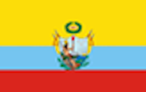
大哥伦比亚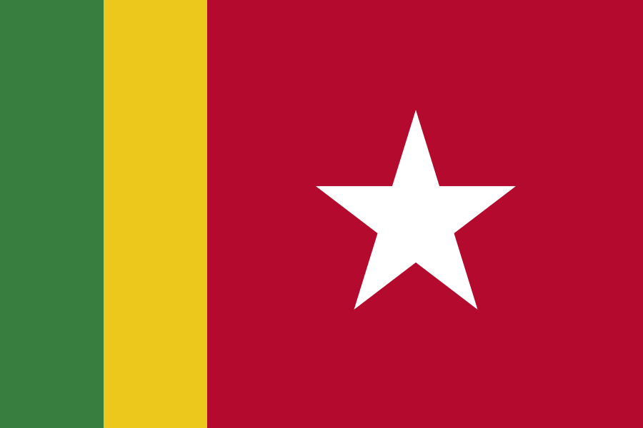
Guianan Federal Republic以下主要是通过决议成立的国家，位于/Hearts of Iron IV/common/decisions/formable_nation_decisions.txt文件之外、未被标注为可成立国家的 .txt 文件中。
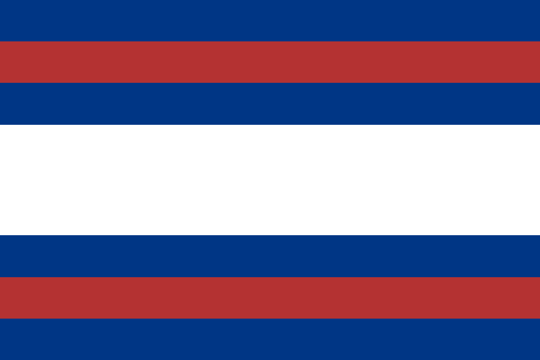
Federal League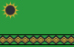
Great Pindorama以下国家通过其他方式成立。
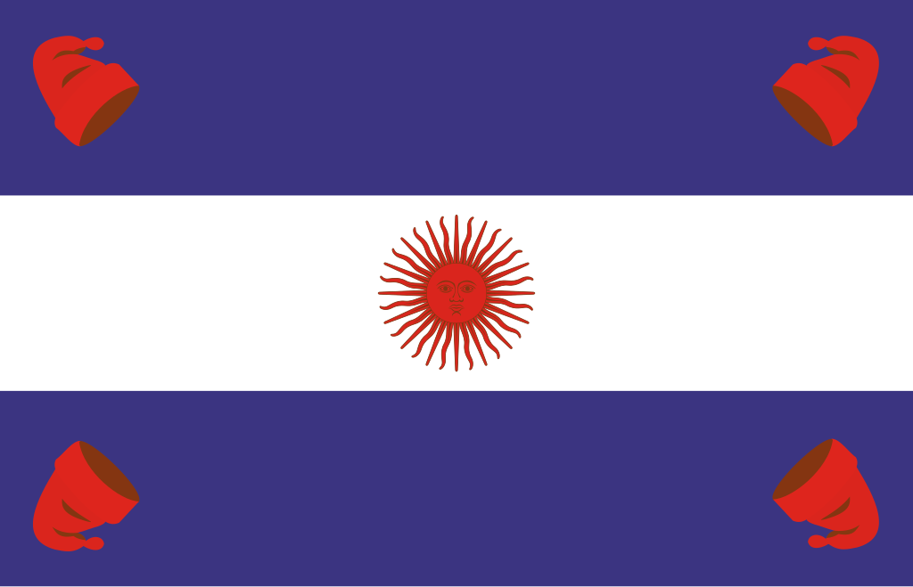
Confederación Sudamericana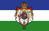
阿劳卡尼亚与巴塔哥尼亚王国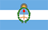
Second Argentine Republic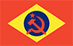
Union of Latin American Socialist Republics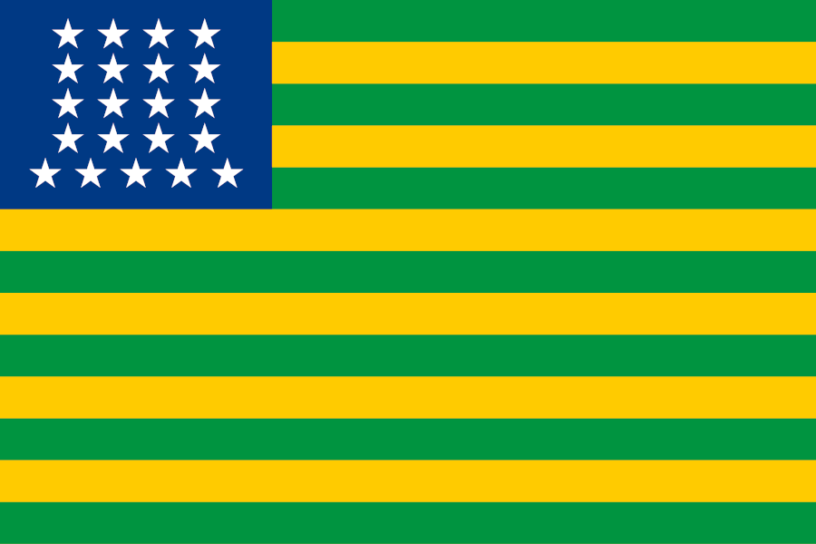
United States of Brazil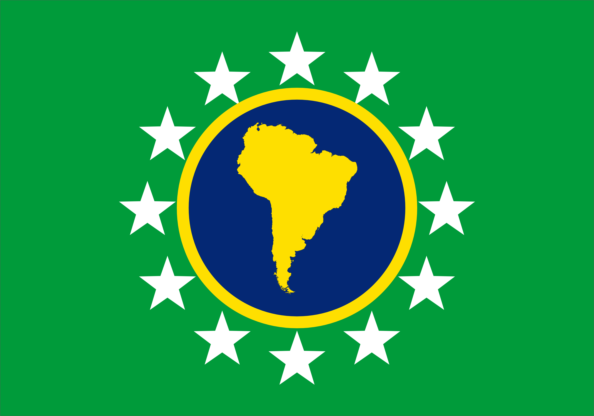
United States of South America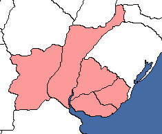
This formable nation created by  乌拉圭 marks the re-establishment of the short-lived Federal League from 1815 to 1820 that will help the tiny nation to take its place as a greater power in South American affairs. It can be created if Uruguay conquers the two states of Región Mesopotámica and Santa Fe from
乌拉圭 marks the re-establishment of the short-lived Federal League from 1815 to 1820 that will help the tiny nation to take its place as a greater power in South American affairs. It can be created if Uruguay conquers the two states of Región Mesopotámica and Santa Fe from  阿根廷.
阿根廷.
| 意识形态 | 国家名称 |
|---|---|
| Federal League | |
| 乌拉圭社会主义共和国 | |
| 新宪法乌拉圭 | |
| Federal League |
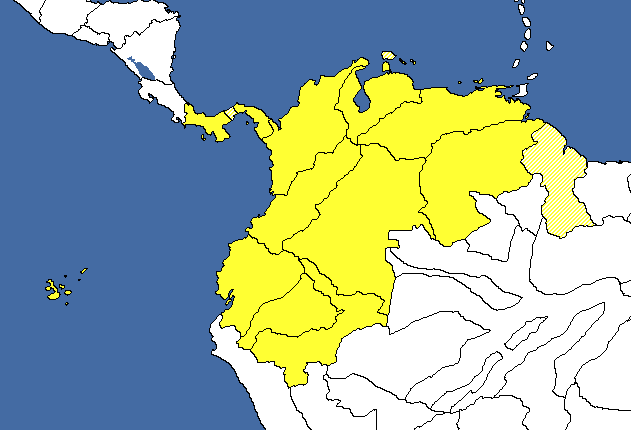
This nation represents the greater form of  哥伦比亚 that existed from 1819 when the Spanish colony of New Granada declared independence and broke off from
哥伦比亚 that existed from 1819 when the Spanish colony of New Granada declared independence and broke off from  西班牙 and lasted until 1831 when the nation broke apart and lost its former lands. This makes
西班牙 and lasted until 1831 when the nation broke apart and lost its former lands. This makes  哥伦比亚 the legitimate successor state but the nation can be formed by any of the eligible nations. If formed by Peru, it will have more cores than if formed by any other nation, as in that case the entirety of Peru would be core territory as opposed to just Pastaza and Loreto.
哥伦比亚 the legitimate successor state but the nation can be formed by any of the eligible nations. If formed by Peru, it will have more cores than if formed by any other nation, as in that case the entirety of Peru would be core territory as opposed to just Pastaza and Loreto.
Note that  秘鲁 can form both 大哥伦比亚和 秘鲁-玻利维亚邦联.
秘鲁 can form both 大哥伦比亚和 秘鲁-玻利维亚邦联.
| 意识形态 | 国家名称 |
|---|---|
| 大哥伦比亚 | |
| Red Colombia | |
| Bolivar Empire | |
| New Granada |
This nation is formable through  Chiles non-aligned path, where the Mapuche overthrow the government in a civil war and seek to liberate the indigenous people in the Americas through a crusade of anti-imperialism. By the end of this crusade, all Amerindian and Polynesian people will be freed and federated in a single nation without a European or colonial presence in continental America and Polynesian Islands.
Chiles non-aligned path, where the Mapuche overthrow the government in a civil war and seek to liberate the indigenous people in the Americas through a crusade of anti-imperialism. By the end of this crusade, all Amerindian and Polynesian people will be freed and federated in a single nation without a European or colonial presence in continental America and Polynesian Islands.
In order to form this nation, the player has to go down the focus path Look to Tradition, followed shortly by committing to Address the Mapuche Conflict. Throughout this path, the player will work towards a civil war where they'll become the Mapuche State against Chile after the completion of the focus  Avenge the Pacification of Araucanía.
Avenge the Pacification of Araucanía.
In this path the player will be able to unlock decisions to liberate both Amerindian and Polynesian states from European nations and former European colonies in both North and South America, from  乌拉圭 to
乌拉圭 to  加拿大, into indigenous ruled subject states. Examples of these indigenous subject states are the
加拿大, into indigenous ruled subject states. Examples of these indigenous subject states are the  印加帝国,
印加帝国,  因纽特联合州 and the
因纽特联合州 and the  萨摩亚独立国.
萨摩亚独立国.
Upon completion of the focus  Unified by Will, the Grand Federation of Amerindian People will be formed and all indigenous subject states are annexed and cored.
Unified by Will, the Grand Federation of Amerindian People will be formed and all indigenous subject states are annexed and cored.
Through forming this nation, it is possible to obtain cores on nearly all states in both continental North and South America, assuming the player liberates all possible indigenous subject states before completing  Unified by Will. The only states on the American continents the player are unable to core are Buenos Aires (278), San Luis y La Pampa (958), Mendoza (511), San Juan y La Rioja (960), Tucumán (508), Los Andes (959), Chaco Austral (509) and Santa Fe (956) in northern Argentina.
Unified by Will. The only states on the American continents the player are unable to core are Buenos Aires (278), San Luis y La Pampa (958), Mendoza (511), San Juan y La Rioja (960), Tucumán (508), Los Andes (959), Chaco Austral (509) and Santa Fe (956) in northern Argentina.
| 意识形态 | 国家名称 |
|---|---|
| Grand Federation of Amerindian Peoples | |
| Grand Federation of Amerindian Peoples | |
| Grand Federation of Amerindian Peoples | |
| Grand Federation of Amerindian Peoples |
The nations of  巴拉圭和
巴拉圭和 乌拉圭 both have the ability to form a new, greater version of the starting nation through their shared focus tree branch.
乌拉圭 both have the ability to form a new, greater version of the starting nation through their shared focus tree branch.
As a part of their shared focus tree, both nations have a branch starting with the focus 在三国同盟的阴影之下 for Paraguay and Rekindle Old Gripes for Uruguay. These allow player choose to aim towards forming either Greater Paraguay or Greater Uruguay. This focus gives the player the ability to wage war against and white peace  巴西和
巴西和 阿根廷 once they control the states needed to form the Greater nation within a year of starting the war.
At the completion of the shared focus Demand a Seat at the High Table, either Greater Paraguay or Greater Uruguay will be formed and the respective states are cored.
阿根廷 once they control the states needed to form the Greater nation within a year of starting the war.
At the completion of the shared focus Demand a Seat at the High Table, either Greater Paraguay or Greater Uruguay will be formed and the respective states are cored.
To form Greater Paraguay, the states needed are Punta Porá (504) and Formosa (957).
To form Greater Uruguay, the states needed are Rio Grande Do Sul (502) and Región Mesopotámica (510).
Greater Paraguay
| 意识形态 | 国家名称 |
|---|---|
| Greater Paraguay | |
| Greater Paraguay | |
| Greater Paraguay | |
| Greater Paraguay |
Greater Uruguay
| 意识形态 | 国家名称 |
|---|---|
| Greater Uruguay | |
| Greater Uruguay | |
| Greater Uruguay | |
| Greater Uruguay |
 智利 can form this for
智利 can form this for  巴西 via decision when it goes down the 马普切国 path, they unlock decisions in the focus
巴西 via decision when it goes down the 马普切国 path, they unlock decisions in the focus  Crusade Against Imperialism. Letting you re-organize
Crusade Against Imperialism. Letting you re-organize  巴西 into Great Pindorama.
巴西 into Great Pindorama.
| 意识形态 | 国家名称 |
|---|---|
| United Indigenous States of Pindoraman | |
| Pindoraman United People's Communes | |
| Integral Pindoraman | |
| Great Pindorama |
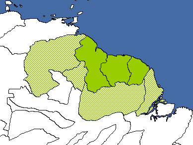
The Guian Federal Republic is a formable nation that can be created by one of the three states Guyana, Suriname or Guyana after breaking free of their colonial rulers of the  英国, the
英国, the  荷兰和
荷兰和 法国. Once they are free, the three South American nations have to be united to enable the formation. Even though the Guianan Federal Republic can get cores on some states of
法国. Once they are free, the three South American nations have to be united to enable the formation. Even though the Guianan Federal Republic can get cores on some states of  委内瑞拉和
委内瑞拉和 巴西, those two nations can't form Guiana.
巴西, those two nations can't form Guiana.
Chile can form this formable for Suriname in the focus  Satellite Kingdoms in which it unlocks decisions to establish puppets. Suriname is one of them and forms the non-aligned version: Grand Kingdom of El Dorado.
Satellite Kingdoms in which it unlocks decisions to establish puppets. Suriname is one of them and forms the non-aligned version: Grand Kingdom of El Dorado.
| 意识形态 | 国家名称 |
|---|---|
| Guianan Federal Republic | |
| Guianan Soviet Socialist Republic | |
| Empire of Guiana | |
| Grand Kingdom of El Dorado |
The Hispanic Empire is a nation formed through the focus tree of  智利 through its fascist path and completing Unite Hispanic America. The Hispanic Empire allows the player to unite Hispanic territories and integrate them as core states through decisions. This formable allows the player to core all of
智利 through its fascist path and completing Unite Hispanic America. The Hispanic Empire allows the player to unite Hispanic territories and integrate them as core states through decisions. This formable allows the player to core all of  墨西哥, the Caribbean, Central America and parts of south western
墨西哥, the Caribbean, Central America and parts of south western  美国.
美国.
It can also be formed in the communist branch. It will be known as Union of Hispanic Peoples.
| 意识形态 | 国家名称 |
|---|---|
| Federation of Hispanic Republics | |
| Union of Hispanic Peoples | |
| Hispanic Empire | |
| The Hispanic Union |
The Kingdom of Chile is formed through  智利's fascist focus path. Chile can choose whether to align themselves to the
智利's fascist focus path. Chile can choose whether to align themselves to the  德意志国, or to forge their own path in South America.
德意志国, or to forge their own path in South America.
To form this nation, the player needs to progress down through the fascist focus branch towards either  Cooperate with Operation Bolívar or 遵循长枪党模式 and continue further down either of these paths. To form the Kingdom of Chile, Chile needs to control all the states necessary in Argentina listed in the focus Restore the Old Kingdom and complete the focus. This gives Chile cores on the controlled land, changes the nation's color and flag, and sets them up to form an empire in the Pacific.
Cooperate with Operation Bolívar or 遵循长枪党模式 and continue further down either of these paths. To form the Kingdom of Chile, Chile needs to control all the states necessary in Argentina listed in the focus Restore the Old Kingdom and complete the focus. This gives Chile cores on the controlled land, changes the nation's color and flag, and sets them up to form an empire in the Pacific.
| 意识形态 | 国家名称 |
|---|---|
| Kingdom of Chile | |
| Kingdom of Chile | |
| Kingdom of Chile | |
| Kingdom of Chile |
This is formed when Chile completes the focus  加冕安托万为君主国王 and after annexing Bolivia, releases it as a puppet.
加冕安托万为君主国王 and after annexing Bolivia, releases it as a puppet.
| 意识形态 | 国家名称 |
|---|---|
| 玻利维亚共和国 | |
| Bolivia Izquerdīsta | |
| 长枪党玻利维亚 | |
| Orélia |
The Plurinational State of Bolivia can be formed by democratic  玻利维亚 using the decision Embrace Plurinationalism. For this to work, the country needs to control just one non-core state.
玻利维亚 using the decision Embrace Plurinationalism. For this to work, the country needs to control just one non-core state.
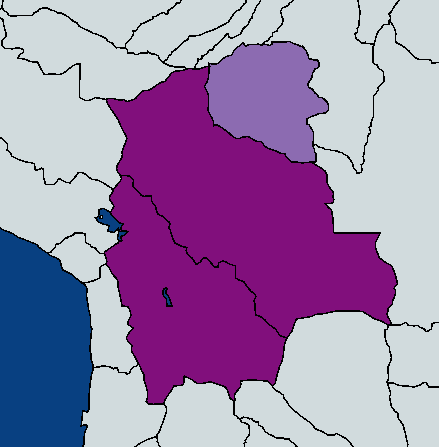
| 意识形态 | 国家名称 |
|---|---|
| Plurinational State of Bolivia | |
| Bolivia Izquerdīsta | |
| 长枪党玻利维亚 | |
| 玻利维亚 |
 智利 can form this for
智利 can form this for  玻利维亚 via decision when it goes down the 马普切国 path, they unlock decisions in the focus
玻利维亚 via decision when it goes down the 马普切国 path, they unlock decisions in the focus  Crusade Against Imperialism. Letting you re-organize
Crusade Against Imperialism. Letting you re-organize  玻利维亚 into Plurinational State of Bolivia.
玻利维亚 into Plurinational State of Bolivia.
If  智利 re-organizes Bolivia, these are the names.
智利 re-organizes Bolivia, these are the names.
| 意识形态 | 国家名称 |
|---|---|
| Plurinational Republic of Bolivia | |
| Plurinational People's Republic of Bolivia | |
| Plurinational Kingdom of Bolivia | |
| Plurinational State of Bolivia |
The Peru-Bolivian Confederation is a formable nation that can be created both by  秘鲁 or by
秘鲁 or by  玻利维亚 - as the name suggests. Once one of the two states completely controls the other, the decision becomes executable.
玻利维亚 - as the name suggests. Once one of the two states completely controls the other, the decision becomes executable.
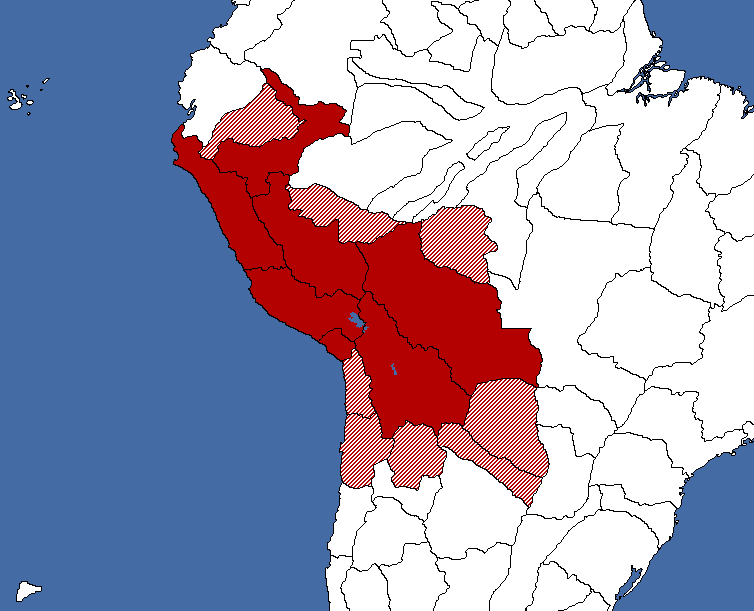
Note that  秘鲁 can form both 大哥伦比亚和 秘鲁-玻利维亚邦联.
秘鲁 can form both 大哥伦比亚和 秘鲁-玻利维亚邦联.
Upon formation, the country color changes to red and all required states will be cored. The states cored but not owned by the opposite country will be cored and two bordering  Brazilian states will also be cored.
Brazilian states will also be cored.
| 意识形态 | 国家名称 |
|---|---|
| United Peru-Bolivian Confederation | |
| Peru-Bolivian Federal People's Republic | |
| Grand Peru-Bolivian Confederation | |
| 秘鲁-玻利维亚邦联 |
 智利 can form this for
智利 can form this for  乌拉圭 in the fascist branch of the focus tree. They will have to do the focus Support the Colonial Plan where Uruguay gets an event to submit to
乌拉圭 in the fascist branch of the focus tree. They will have to do the focus Support the Colonial Plan where Uruguay gets an event to submit to  德国. If they accept, they will become Reichsprotektorat Uruguay.
德国. If they accept, they will become Reichsprotektorat Uruguay.
| 意识形态 | 国家名称 |
|---|---|
| Kolonie Uruguay | |
| Kolonie Uruguay | |
| Reichsprotektorat Uruguay | |
| Deustch-Uruguay |
The nation of Reino De La Patria Nueva is formable through the focus tree of  智利, through it's non-aligned path starting with the focus Look to Tradition. Throughout this path,
智利, through it's non-aligned path starting with the focus Look to Tradition. Throughout this path,  智利 will crown the Frenchman Antoine III as king and lay claims on land in South America, as well as French territories and historical territorial claims with the ability to core them through integration decisions.
智利 will crown the Frenchman Antoine III as king and lay claims on land in South America, as well as French territories and historical territorial claims with the ability to core them through integration decisions.
Reino De La Patria Nueva is formed at the very end of this focus branch, where  智利 overthrows Antoine III and crowns Carlos Ibáñez del Campo as king through the focus Treading the Straight Line. In order to be able to start this focus however, the player needs to have completed the focus Ibáñez as Prime Minister earlier on in the focus branch, otherwise they will be locked out of the option to form Reino De La Patria Nueva.
智利 overthrows Antoine III and crowns Carlos Ibáñez del Campo as king through the focus Treading the Straight Line. In order to be able to start this focus however, the player needs to have completed the focus Ibáñez as Prime Minister earlier on in the focus branch, otherwise they will be locked out of the option to form Reino De La Patria Nueva.
The nation's name and color changes upon formation.
| 意识形态 | 国家名称 |
|---|---|
| Patria Nueva | |
| United Collectives of the Southern Andes | |
| Patria Vieja | |
| Reino De La Patria Nueva |
The Second Argentine Republic is a nation that is formable through  阿根廷's democratic focus branch. By progressing through the focus branch, the player will be able to either align themselves with the Allies or form their own faction and be a bastion of democracy in South America.
阿根廷's democratic focus branch. By progressing through the focus branch, the player will be able to either align themselves with the Allies or form their own faction and be a bastion of democracy in South America.
To form the Second Argentine Republic, the player needs to complete the focus The Second Argentine Republic at the end of the focus branch. Upon formation, the nation's color and name changes and the Second Argentine Republic guarantees the independence of all democratic nations in South America.
| 意识形态 | 国家名称 |
|---|---|
| Second Argentine Republic | |
| Second Argentine Republic | |
| Second Argentine Republic | |
| Second Argentine Republic |
The Fourth Reich is a secret nation available for  阿根廷 through a hidden focus branch. To be able to see this focus branch and form The Fourth Reich, Argentina needs to have completed the focus
阿根廷 through a hidden focus branch. To be able to see this focus branch and form The Fourth Reich, Argentina needs to have completed the focus  Work With The Nationalists before the capital of the
Work With The Nationalists before the capital of the  德意志国 Berlin is occupied while Adolf Hitler is the leader of Germany. After the completion of this focus and within a month after Berlins fall, an event will fire that allows the player to hand the government over to a strange visitor.
德意志国 Berlin is occupied while Adolf Hitler is the leader of Germany. After the completion of this focus and within a month after Berlins fall, an event will fire that allows the player to hand the government over to a strange visitor.
Should you give this stranger control of Argentina, the hidden focus branch will appear and allow the formation of the Fourth Reich by completing Fourth Time's The Charm. As the Fourth Reich, the player will be able to gain cores on all of Germany, wargoals against non-fascist nations in South America, nuclear technology and a ship through progressing further down the hidden focus branch.
The event needed to form The Fourth Reich will fire if Berlin is occupied at any point in the game, including during the German civil war initiated through the German alternate history path.
| 意识形态 | 国家名称 |
|---|---|
| The Fourth Reich | |
| The Fourth Reich | |
| The Fourth Reich | |
| The Fourth Reich |
For this formable nation, see Formable nations/Europe#United Kingdom of Portugal and Brazil
| 北美洲 |
| 南美洲 |
| 大洋洲 |
| Americas |
|
| 大洋洲 |
|